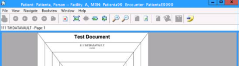
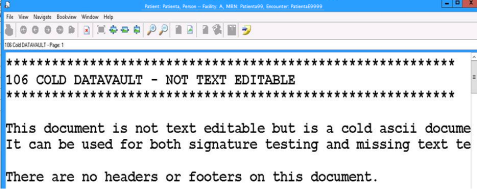

The most basic viewing function allows you to view one page from one document.
| 1. | From the parent application (ROI Module |
The system launches the viewer and displays the document.
Note: The ICU component can be configured to display document images either automatically upon launch or only when you manually click a button in the ICU window. If you are using ICU and no viewer window displays, click either the View button or the Compare button in the ICU window.
| 2. | Conditional: If you are viewing a text-based document, you can view the document either as an image or as text. |
| • | To view the document as an image: Make sure that Display as Text on the View menu is OFF (not checked). The system displays the document as an image.  Example 1: Document displayed as an image |
Note: When displaying a text-based document as an image, the viewer displays only the number of lines per page specified by the COLD overlay template for that document type. If the actual number of lines exceeds the physical dimensions of the COLD overlay, text is truncated and cannot be displayed. A standard 8.5 x 11 inch COLD overlay supports 66 lines of text.
| • | To view the document as text: Make sure that Display as Text on the View menu is enabled (checked).  Example 2: Same document displayed as text |
See other topics